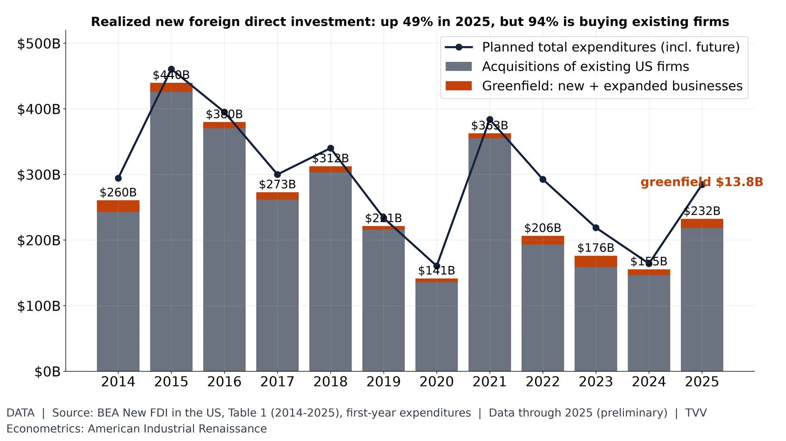
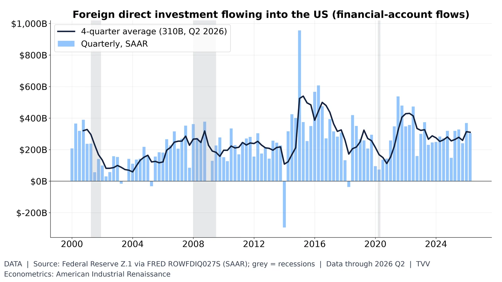
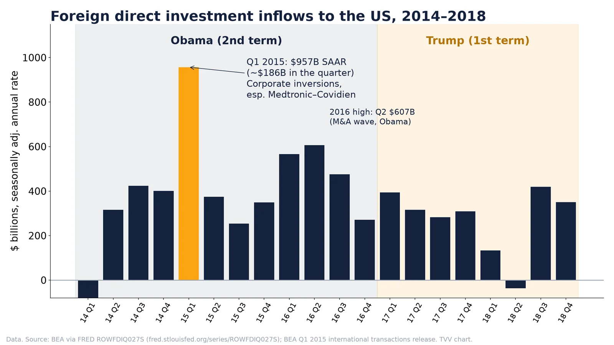

6. Foreign Investment Flows

BEA: 2025 new FDI first-year spending $232.2B (+49%); greenfield only $13.8B. Data through 2025 (released Jun 2026).
Data | Data date: 2025 (preliminary)
Sources: https://www.bea.gov/data/intl-trade-investment/new-foreign-direct-investment-united-states/supplemental-data https://www.bea.gov/news/2026/new-foreign-direct-investment-united-states-2025

FDI into the US ran $304B annualized in Q2 2026; 4-quarter average $310B. Fed Z.1 via FRED.
Data | Data date: 2026 Q2

FDI inflows peaked Q1 2015 at $956.6B annualized, driven by inversions like Medtronic–Covidien, not pledges.
- Peak Q1 2015 (Obama 2nd term): $956.6B SAAR, about $186B in the quarter (Data) https://www.bea.gov/news/2015/us-international-transactions-1st-quarter-2015-and-annual-revisions
- Driver: inversions, mainly Medtronic–Covidien (Jan 26, 2015) (Data) same BEA release
- 2016 high $606.9B SAAR in Q2; Trump first year $283–394B (Data) https://fred.stlouisfed.org/series/ROWFDIQ027S
- Acquisitions about 97% of new FDI spending 2015–2017; new plants plus expansions only $9–14B a year (Data) https://www.bea.gov/data/intl-trade-investment/new-foreign-direct-investment-united-states
- No evidence SelectUSA pledges drove the peak (Interpretation)